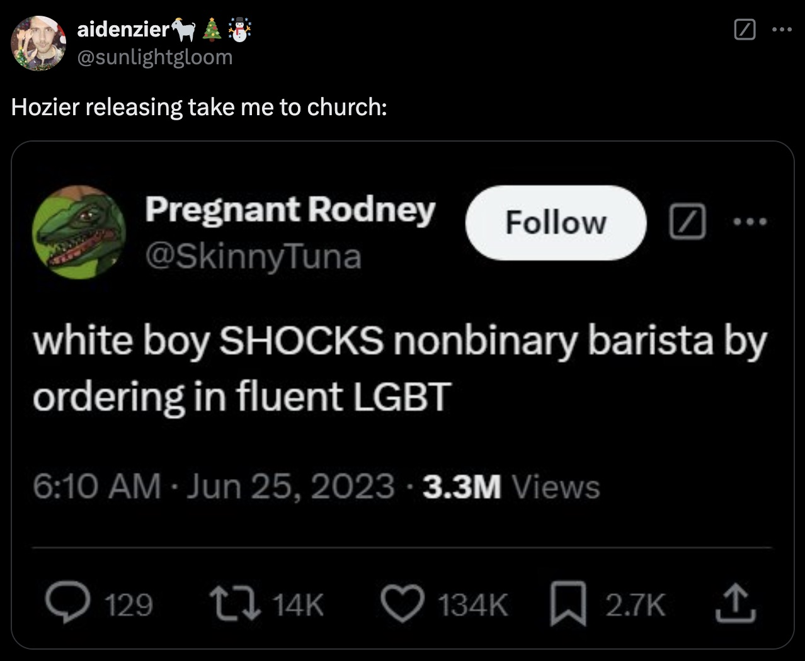

esse shrine tá em andamento, o texto dele ainda não é a versão final. por enquanto, vou só adicionar algumas coisas soltas que fazem sentido com esse tópico hehe
o hozier é um cantor irlandês que eu gosto MUITO.
as músicas dele falam muito sobre fé, amor, sacrifício, culpa. como uma pessoa que passou por bastante desconstrução religiosa, várias das músicas dele mexem muito comigo. não sei há quanto tempo conheço ele mas sei que elas ressoam de uma forma muito gostosa dentro do meu coração.
em 2024 eu tive a oportunidade, graças ao luquinhas, de ver ele ao vivo no lollapalooza e foi um dia absurdo de especial. foi meu primeiro lollapalooza, uma oportunidade que eu nem sabia que ia ter chance de ter até uns 4 dias antes.
fun facts
- fizeram um CPF (documento do brasil) gigante de cartolina pro hozier nesse show
- de tabela, assisti a um show do pierce the veil nesse dia também que me marcou muito
imagens engraçadas envolvendo o hozier que eu quis colocar aqui:
